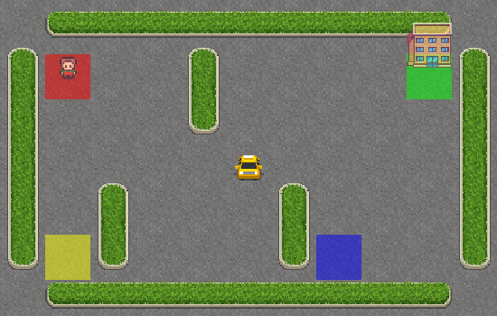
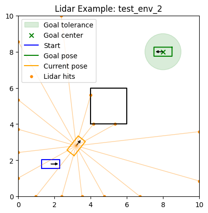

In this MP you will implement:
As in the earlier MPs, a lot of code is already provided for you. Your job is to fill in the missing learning logic and, for the Dubins car part, design a useful hand-crafted feature representation.
Use Python 3.10 or newer (apologies if you were
previously using 3.9). From the template/ directory,
install the assignment dependencies:
python -m pip install -r requirements.txtAll commands below assume your terminal is in the
template/ directory. Look through the starter files
there.
Files relevant to Part III:
tabular_q_learning.py - you will edit and submit
thisFiles relevant to Part IV:
linear_dqn.py - you will edit and submit thisgym_robot.py - you will edit and submit thiscspace.py - no need to copy from MP3, we provide it for
yourobot.py - no need to copy from MP3, we provide it for
youdata/ - create train_env_*.json files
here; five visible test environments are provided for evaluationIn this part you will implement tabular Q-learning for the Gymnasium Taxi-v4 environment.
You will find TODO(III) markers in
tabular_q_learning.py. The main tasks are:
Part III is worth 50 points: Q-table initialization and action
selection are worth 8 points, the Q-learning update is worth 14 points,
the training loop is worth 8 points, and the learned policy stored in
QAgent_weights.npy is worth 20 points. You are free to tune
hyperparameters such as alpha, gamma,
epsilon, and init_val.
The experiments dictionary at the bottom of
tabular_q_learning.py controls the hyperparameters and
whether weights are saved. Modify it as needed, then run:
python tabular_q_learning.pyUse python tabular_q_learning.py --seed <integer>
to repeat an experiment with another fixed seed. You may add helper
functions or classes as needed.

R (the red tile), and the destination at
G (the green tile).
We highly recommend that you read through the official Taxi environment documentation to understand the details of the environment. Here we provide a brief summary.
Taxi-v4 is a small gridworld in which a taxi must:
The environment is small enough that a simple tabular method works very well.
The image above can be rendered using env.render() after
you create the environment with render_mode="rgb_array".
For simpler debugging in terminal the environment also supports an ASCII
render that looks something like:
+---------+
|R: | : :G|
| : | : : |
| : : T : |
| | : | : |
|Y| : |B: |
+---------+Each Gymnasium environment provides:
env.observation_spaceenv.action_spaceFor Taxi-v4 with the default arguments:
Discrete(500)
env.observation_space.n == 500Discrete(6)
env.action_space.n == 6The six actions are:
0: move south1: move north2: move east3: move west4: pick up passenger5: drop off passengerReward structure:
-1 for a normal step+20 for a successful drop-off-10 for illegal pickup/drop-off actionsTaxi-v4 also supports optional rainy transitions and a fickle
passenger. This assignment uses the defaults
(is_rainy=False, fickle_passenger=False), so
movement is deterministic and the state/action spaces, rewards, and
200-step limit described here apply.
Episode end conditions:
terminated=True when the passenger is successfully
dropped offtruncated=True if the environment time limit of 200
steps is reachedWhen training, stop an episode when:
done = terminated or truncatedWhen updating the Q-table, however, use only terminated
to decide whether to bootstrap or to use the immediate reward by
itself.
The Taxi observation is a single integer state id. You do not need to decode it into a specific state of the world since for tabular Q-learning we can use it directly as the row index into your Q-table.
The basic loop is:
state, info = env.reset()
next_state, reward, terminated, truncated, info = env.step(action)tabular_q_learning.pyQAgent.__init__(...)Initialize self.q_table as a NumPy array with:
[n_states, n_actions]floatinit_valQAgent.act(state, epsilon=0.0)Implement epsilon-greedy action selection:
epsilon, choose a random actionnp.argmax behavior)QAgent.update(...)Implement the standard Q-learning update:
target = reward if terminal
target = reward + gamma * max_a' Q(s', a') otherwise
Q(s, a) <- Q(s, a) + alpha * (target - Q(s, a))QAgent.__init__, QAgent.act,
QAgent.update, and train_agent are all graded
directly for correctness. The optional eval_agent helper is
not called by the autograder. Your saved Q-table is graded independently
for policy performance.
train_agent(...)Implement the training loop over episodes:
env.step(action)terminated or truncatedReturn one total reward per training episode for the plotting
functions in __main__ to display your training results.
Notice that the autograder tests this function correctness, but does not retrain your agent.
eval_agent(...)We recommend writing a separate greedy evaluation helper with
epsilon=0.0. The helper itself is not graded, but this
matches the greedy policy that the autograder extracts directly from
your saved Q-table.
Submit your best trained Q-table as a NumPy file named
QAgent_weights.npy. When saving is enabled, the provided
runner writes this file beside tabular_q_learning.py and
prints the full path. The runner uses seed 440 by default; pass
--seed <integer> to repeat an experiment with a
different fixed seed.
In this part you will implement a linear function approximator for DQN in a Dubins car environment. Training can be slow because the agent runs for many timesteps across multiple environments and each step requires collision checking. Start this part early enough to leave time for several experiments.
In MP4 you wrote linear models of the form: \[y = X A\]
Here you will again use a linear model, but now each action has its own weight vector: \[ Q(s, a) = \phi(s)^T w_a \]
where:
Note that for convenience we will store the weights as a single matrix \(W\), i.e., a linear function with multiple outputs.
Your job is to:
gym_robot.pylinear_dqn.pytrain_env_*.json training
environmentslinear_dqn_weights.npy|
|
|
| The 5 visible Dubins-car test environments provided for you. Notice that the actual heading of the goal is visualized but not relevant to the task. All that matters is the position of the goal and radius around it. | An example successful rollout on one of the provided visible test environments. The green disk shows the goal-tolerance region. The dynamics include action noise; the provided test helper uses a fixed seed so repeated local tests are reproducible. |
The underlying robot is a Dubins-style car with a fixed set of three controls and stochastic transitions (noise added to these controls):
Each episode:
start pose in the JSON filegoal_tolerance of the goal position (not
configuration, meaning the final heading does not matter)30 steps if the goal has not been
reachedThe reward for each action is:
-30 if the car collides; the episode terminates+10 if the car reaches the goal region; the episode
terminatesThus, an ordinary step has positive reward when the car moves closer
to the goal and negative reward when it moves farther away. The
+10 goal reward replaces the ordinary distance-change
reward on the successful step. Notice that this reward for moving
towards the goal is a shaped reward that we provide. In general
this is something you might tune yourself but for this assignment leave
it as is.
When writing your training loop end an episode when
done = terminated or truncated just like in the Taxi
environment. And again, when computing the DQN target, only use
terminated to decide whether to bootstrap from the next
state.
gym_robot.pyThe environment already handles:
Your main responsibility in this file is the observation function:
make_observation(...)make_observation(...)The GymDubinsCar class uses the very first observation
returned by reset() to define
observation_space, so consistency matters. If your first
observation has a different shape from later observations, your training
and evaluation code will break.
Because the Q-function is linear, feature engineering matters more here than it would in a deep-network implementation. You may use interaction terms, nonlinear transformations of raw inputs, or other information extracted from the robot state and environment. One key hint is that our action space is discrete and therefore to make your function’s job easier you may want to create some discrete features, features that answer categorical questions such as “is there an obstacle within a certain distance in a certain direction?” or “is the goal far to the left of my current heading, close to straight, or far to the right?”. Designing working features is not easy, especially because it can be hard to decide if what’s going wrong are your features or your training (described below). You will need to experiment and find a good balance and a training procedure that allows you to draw meaningful conclusions.
linear_dqn.pyImplement the linear DQN logic, including:
run_episode(...)train(...)A separate greedy evaluation helper is already provided.
Part IV is worth 50 points: the required observation, agent, update, and episode implementations are worth 20 points, and the saved policy is worth 30 points.
Some useful type/shape expectations:
self.weights should be a floating-point 2D NumPy array
of shape [num_features, num_actions]self.target_weights should initially be an independent
copy of self.weights with the same shapeact(...) should compute
features @ self.weights and return an integer action index
in [0, num_actions - 1], except when epsilon-greedy
exploration chooses a random action. Greedy ties should select the first
maximum, as np.argmax doesThe core update is still the usual DQN target:
target = reward if terminated
target = reward + gamma * max_a' Q_target(s', a') otherwiseAppend transitions to your replay buffer, throwing away the oldest
elements once you reach self.max_buffer_size. Once the
buffer contains at least batch_size transitions, sample
batch_size transitions without replacement and update the
online weights. Use the target network only for the next-state value,
and replace it with an independent copy of the online weights after
every target_weights_update_freq completed gradient
updates.
For making the update we now need to use the gradient instead of making a direct update to a Q-table. The gradient here is the same linear-regression gradient you implemented in MP4. Recall that MP4 used predictions \(XA\) and the mean-squared error
\[ L(A) = \frac{1}{N}\lVert XA-y\rVert_2^2, \]
whose gradient was
\[ \nabla_A L(A) = \frac{2}{N}X^T(XA-y). \]
For a DQN batch of size \(B\), each row has a feature vector \(\phi_i \in \mathbb{R}^d\), one selected action \(a_i\), and a scalar TD target \(y_i\):
\[ q_i = Q(s_i,a_i) = \phi_i^T w_{a_i}, \]
\[ y_i = \begin{cases} r_i, & \text{if the transition terminated},\\ r_i + \gamma \max_{a'} \phi(s'_i)^T w^-_{a'}, & \text{otherwise}, \end{cases} \]
where \(w^-_{a'}\) is a column of the target-network weights. The idea is that these \(y_i\)’s are our labels (we do not differentiate through them) and we will try and make our function, \(q_i\), closer to these labels. We’ll use the half mean-squared TD loss
\[ L(W) = \frac{1}{2B}\sum_{i=1}^{B}(q_i-y_i)^2. \]
The factor \(1/2\) cancels the factor \(2\) that appeared in the MP4 MSE gradient. For one transition, the chain rule gives
\[ \nabla_{w_{a_i}}\frac{1}{2}(q_i-y_i)^2 = \frac{\partial \frac{1}{2}(q_i-y_i)^2}{\partial q_i} \nabla_{w_{a_i}}q_i = (q_i-y_i)\phi_i. \]
Therefore, for each action column \(w_a \in \mathbb{R}^d\), the batch gradient is
\[ \nabla_{w_a}L(W) = \frac{1}{B}\sum_{i:a_i=a}(q_i-y_i)\phi_i. \]
The complete gradient has the same shape as \(W\), namely
[num_features, num_actions]. A transition contributes only
to its selected action column. The gradient step is
\[ w_a \leftarrow w_a - \alpha \nabla_{w_a}L(W). \]
run_episode(...)Implement one complete training episode in one environment:
agent.act(state, epsilon=epsilon) and pass that
action to env.step(...).agent.update(...),
including learning_rate, discount_factor, and
batch_size through the corresponding alpha,
gamma, and batch_size arguments.next_state and accumulate the undiscounted
reward.terminated or truncated
is true, but pass only terminated to
agent.update, since a time-limit truncation still has a
valid next-state value from which to bootstrap.train(...)Build your longer experiment around run_episode(...).
You may choose how to sample the training environments, whether to use a
curriculum, how often to change epsilon, and which learning statistics
to retain. If you change its arguments or return value, update the
provided __main__ block accordingly.
The starter’s default arguments are reasonable starting values, not a
prescribed or guaranteed-best configuration. They support a simple
baseline: make repeated passes over all environments, begin with
epsilon_start, and linearly reduce epsilon to
epsilon_end over epsilon_decay_steps passes.
Returning the mean total reward from each pass gives you one value per
pass that you can plot as a training-return curve. You may use another
schedule or statistic. Be mindful that visiting every environment once
per pass makes total experience grow with the number of
environments.
The provided test(...) helper performs a reproducible
greedy evaluation and saves a trajectory plot.
You are expected to create your own training environments. Don’t ignore this step just because it isn’t graded directly!
Only files named data/train_env_<number>.json,
where <number> is an integer, are loaded for
training. For example:
data/train_env_1.json
data/train_env_2.jsonEach file has the same structure as the provided test environments. Keep the robot, motion, tolerance, and boundary parameters unchanged. You should edit:
start: the initial pose [x, y, theta]goal: the goal pose [x, y, theta] (the
goal check ignores theta)obstacles: a list of polygonal obstaclesEach obstacle is a list of at least three [x, y]
vertices in counterclockwise order. The final vertex is connected back
to the first automatically. For example, one square obstacle is written
as:
"obstacles": [
[[4.0, 4.0], [6.0, 4.0], [6.0, 6.0], [4.0, 6.0]]
]Use "obstacles": [] for an empty workspace. Use simple,
non-self-intersecting polygons inside the boundary, and choose start and
goal poses where the entire car is collision-free.
A simple workflow is:
train_env_<number>.json
patternstart, goal, and obstacle
layoutNone of our hidden tests are extremely challenging but they do require a reasonable amount of training and a good feature design to pass. We recommend starting with simple environments and then gradually increasing the difficulty as you iterate on your design.
|
 |

|
| An example lidar visualization showing the current robot pose, lidar rays, hit points, and the goal-tolerance region. | Example training return curve from a run in which the initial epsilon was decayed to 0.2 over 500 training passes and then held constant. |
After implementing Part IV and creating at least one training environment, use a short run to check that the complete pipeline works:
python linear_dqn.py --num_episodes 5Then choose suitable training settings and run
python linear_dqn.py. Each run gets a new directory under
results/. To test weights from a completed run without
training again, use:
python linear_dqn.py --test_only --weights_file results/run_1/linear_dqn_weights.npyRun python linear_dqn.py --help to see the remaining
options.
We provide 5 visible test environments in
data/test_env_1.json through
data/test_env_5.json. Your saved policy is evaluated on
those environments and 10 additional hidden environments, for a total of
15.
Your code correctness is worth 20 points and the saved-policy evaluation is worth 30 points: full credit requires success in at least 10 of the 15 test environments, with proportional partial credit below that threshold.
We strongly recommend that you do not train directly on the 5 visible test environments at first. Instead, treat them like a validation set while you iterate on:
Once you have settled on a final design, you may also include the visible test environments in your final training run.
The code runs each experiment in a new directory under
results/run_<experiment_number>. It saves
linear_dqn_weights.npy in that directory along with test
results and plots. Choose your best run and submit that weights file
with the exact name linear_dqn_weights.npy. The runner uses
seed 440 by default; use --seed <integer> to
reproduce a run or deliberately compare several training seeds.
In gym_robot.py, do not change the provided dynamics,
action-noise magnitude, rewards, or episode limit. Limit your code
changes there to the feature representation and any feature helpers it
needs.
Upload exactly these five files to Gradescope:
tabular_q_learning.pygym_robot.pylinear_dqn.pyQAgent_weights.npylinear_dqn_weights.npyDo not upload training-environment JSON files, the
results/ directory, or provided support files such as
cspace.py and robot.py. Make sure
linear_dqn_weights.npy was trained with the final feature
vector in your submitted gym_robot.py. Remove high-volume
debugging prints, especially output produced every step; occasional
experiment summaries are fine. Access Gradescope from the Launch App
button in Coursera so your grade is synchronized.
You are expected to be familiar with the general policies on the course syllabus, including academic integrity. In particular, this is an individual assignment and you may not use external sources to write significant parts of your code for you.